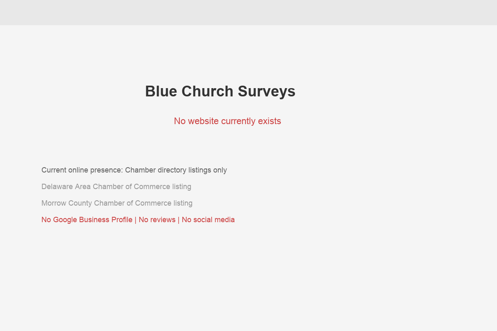

Blue Church Surveys is a property surveying firm based in Marengo, Ohio, serving the Delaware County area and beyond. The company is owned and operated by Steven Newell, PS (Professional Surveyor) — a surveyor with a career that stretches back over four decades. That kind of tenure in the surveying profession is genuinely rare, and it represents a depth of knowledge about Central Ohio's property landscape that simply can't be replicated by a newcomer.
Steven's professional background is impressive. He spent 30 years at Woolpert, one of the most respected architecture, engineering, and geospatial firms in the country. After that, he served as a Project Manager at SAM Companies and then as a Survey Manager at Sands Decker — both well-known firms in the Ohio engineering and surveying space. He founded Blue Church Surveys in 2014 and has been running it as an independent operation since, bringing all that institutional knowledge to bear for individual homeowners, builders, and developers in the region.
The firm is a member of both the Delaware Area Chamber of Commerce and the Morrow County Chamber of Commerce, which signals active community engagement across multiple counties. The chamber listings categorize Blue Church under Engineers/Surveyors and Construction — and the service description, while brief, is clear: property survey services.
Blue Church Surveys offers the full range of what property owners and developers need: boundary surveys, lot splits, topographic surveys, construction staking, ALTA surveys, and more. With an Ohio State University education and decades of field experience spanning residential, commercial, and government projects, Steven brings a level of expertise that most solo surveying operations simply don't have.
Delaware County isn't just any market — it's one of the fastest-growing counties in Ohio and consistently ranks among the wealthiest. The county's population has been steadily increasing, driving new home construction, commercial development, and the kind of property transactions that generate survey demand.
New subdivisions going in around Sunbury, Powell, and Lewis Center. Rural parcels being split for development. Existing homeowners adding fences, pools, and additions that require boundary verification. Commercial developments needing ALTA surveys for financing. All of this activity needs surveyors — and the supply of experienced, locally-based Professional Surveyors is limited.
Your position in Marengo gives you coverage of both Delaware County and Morrow County — plus easy reach into Marion and Knox counties. That multi-county service area, combined with the growth dynamics of Delaware County, creates a market opportunity that a well-positioned surveying firm could capture for years to come.
The question isn't whether the demand is there. It is. The question is whether potential clients can find you when they need you. Right now, the answer is no.
Based on our research and industry knowledge, here's the full scope of what Blue Church Surveys likely offers — the kind of services a website should showcase:
Each of these services represents a distinct search query, a distinct customer need, and a distinct page on your future website. That's seven opportunities to be found online — and right now, you're capturing zero of them.

Captured March 29, 2026
Let's be direct: Blue Church Surveys has no website. Your entire online footprint is a handful of directory listings — the Delaware Area Chamber page, a Morrow County Chamber listing, a MapQuest entry, and a SignalHire profile. That's it. Here's what the digital scorecard looks like:
Surveying is a trust-based profession. When someone hires a surveyor, they're relying on that person's accuracy to determine legal property boundaries — boundaries that affect real estate transactions worth hundreds of thousands of dollars, fence placements that could spark neighbor disputes, and construction foundations that must be precisely positioned.
For that reason, credentials matter enormously in this industry. A Professional Surveyor (PS) designation, an Ohio State education, 30 years at Woolpert — these are exactly the kind of trust signals that close deals. But in 2026, people verify those credentials online. They Google the business name. They look for a website. They check Google Reviews. When they find nothing — even if the referral was strong — doubt creeps in.
A survey from Angi found that 97% of consumers searched online for a local business in the past year, and 82% read online reviews for local businesses. For a profession where trust and accuracy are everything, being invisible online is a liability you don't need.
We looked at who's capturing the surveying business in your service area right now. Here's where Blue Church Surveys stands relative to competitors who are actively winning online:
Pro Boundary Land Surveyors, based in Westerville (just south of Delaware), is family-owned and has been operating since 2005. Their owner, Timothy Stadt, has 20 years of experience — roughly half of yours. But they have a clean, professional website with dedicated pages for boundary surveys, topographic surveys, and ALTA surveys. They have a prominent quote request form, a personal bio with a professional headshot, and active review profiles. They show up when people search.
Willis Engineering & Surveying in Columbus has been in business for over 25 years and takes a comprehensive approach — offering nine distinct survey service types, each with its own page on their website. They've invested in content that educates potential clients about what each survey type involves and why it matters. That content does double duty: it builds trust AND ranks in search engines.
People in your service area are actively searching for surveyors — and right now, every single one of those searches goes to your competitors. Here are the terms that matter most:
Let's break down specifically what makes Pro Boundary and Willis effective online — and what you can learn from (and surpass) their approach:
Pro Boundary's Website is built on Weebly — a simple, affordable platform. It's not fancy. But it has three things that matter: (1) a clear list of services with individual pages, (2) a prominent "Request a Quote" button on every page, and (3) a personal photo and bio of the owner, Timothy Stadt. That human element — putting a face and a story to the business — is incredibly effective for a trust-based service like surveying. Your story is objectively more compelling than his. You just need a place to tell it.
Willis Engineering's Website takes a content-heavy approach. They have nine distinct service pages, each one explaining what the survey type involves, who needs it, and why it matters. This isn't just good for visitors — it's SEO gold. Each page ranks for different search terms, creating multiple pathways for potential clients to find them. Their "Land Surveying Process & Procedures" section educates visitors while building authority. It's a template you could execute even better, given your deeper experience.
Even Patridge Surveying — with a website that looks like it was built in 2003 using HTML tables — still appears in search results. Their site has no responsive design, no modern styling, and no contact form. But it exists, and that alone gives them an advantage over Blue Church Surveys. That's how low the bar is in this market. A professionally built site would leapfrog every local competitor immediately.
According to the BBB, there are 428 land surveyor results listed near Delaware, OH. But that number is misleading — the vast majority are large engineering firms based in Columbus or beyond. For homeowners specifically searching for a local surveyor in Delaware or Morrow County, the competition is remarkably thin:
This means a well-built, modern website for Blue Church Surveys wouldn't just compete — it would likely dominate local search results within the first few months. The competition simply isn't investing in digital, which creates a wide-open lane for whoever does.
Google's "People Also Ask" section reveals the questions homeowners and builders have when they need a surveyor:
Survey demand follows predictable seasonal patterns that a content strategy can capitalize on:
A website with seasonal content — blog posts timed to spring survey demand, for example — captures people at exactly the right moment in their decision-making process.
Without a website, you cannot rank for any search term. But here's what a targeted content strategy could capture:
The way people find local service providers is shifting rapidly. AI-powered search (Google AI Overviews, ChatGPT, voice assistants) is increasingly how homeowners and builders discover professionals. Here's what that means for Blue Church Surveys:
Think about how people actually look for surveyors. Often it's in the middle of a real estate transaction, a construction project, or a property dispute. They're busy. They're stressed. They pick up their phone and say: "Hey Google, find me a property surveyor near Delaware, Ohio."
Voice search results are even more concentrated than traditional search — typically only 1-3 results are read aloud. Without a website, without a Google Business Profile, without structured data, Blue Church Surveys cannot appear in those results. Period.
The businesses that invest in these signals now will have a compounding advantage over the next 3-5 years as AI and voice search become the default way people find local services. For a surveyor with your credentials, the investment required is modest — the return is significant.
Starting from zero is actually an advantage — we get to build everything right from the start, with no bad habits or outdated platforms to work around. Here are the specific moves we'd make for Blue Church Surveys:
Build a clean, fast, mobile-first website with dedicated pages for each survey type: boundary surveys, lot splits, topographic surveys, ALTA surveys, flood elevation certificates, and construction staking. Each page explains what the service is, who needs it, and how to get started — building trust while capturing search traffic.
Create and fully optimize your Google Business Profile from scratch. Service area configuration covering Delaware, Morrow, Marion, and Knox counties. Professional photo, complete service categories, business hours, and a direct quote request link. This alone puts you in the local map pack when people search "surveyor near me."
Build a compelling "About Steven Newell" page that tells the story of 40+ years in surveying — from Ohio State to Woolpert to founding Blue Church. This isn't vanity; it's the single most important trust signal for AI search, potential clients, and referral partners. Your resume is your competitive advantage.
Implement a smart quote request form that collects property address, survey type needed, parcel size, and timeline. Leads go directly to your email or phone with all the info you need to provide an accurate estimate. Available 24/7 — capturing inquiries while you're in the field.
Ensure your business name, address, and phone number are consistent across all directories — Google, Bing, Apple Maps, BBB, Yelp, Angi, and more. Build location-specific content for Delaware County, Morrow County, and surrounding areas. This creates a network of trust signals that tells Google you're a real, established business.
We deliberately kept this to five recommendations — not fifteen — because we believe in focus. Every item above directly addresses the core problem: Blue Church Surveys is invisible online despite having best-in-class credentials. These five moves fix that systematically:
This isn't about doing everything at once. It's about doing the right things in the right order, and each one building on the last.
We know you're busy in the field — not sitting at a desk. Our process is designed to take as little of your time as possible while building something that works hard for your business around the clock:
Honestly? Not much. Here's the full list of what we'd ask for over the entire engagement:
Total time commitment: under 3 hours across the entire project. Everything else — writing, design, development, SEO, directory submissions — is handled by our team.
A website is the foundation, but the full digital picture for a surveying firm includes multiple touchpoints that build trust, generate leads, and keep your pipeline full:
Let's talk specifics about why Google Business Profile is so critical for a surveying business. When someone searches "land surveyor near me" or "property survey Delaware Ohio," Google shows a map pack — three businesses with their location, rating, hours, and a link to call or get directions. This map pack appears above organic search results and captures the majority of clicks.
Without a Google Business Profile, you cannot appear in the map pack. Full stop. Creating and optimizing one is the single fastest path from invisible to discoverable. And for a service-area business like yours — where clients don't come to you, you go to them — Google's service-area configuration lets you appear in searches across multiple counties without revealing your home address.
Your GBP will be the single highest-impact asset after the website itself. A fully optimized profile with service area coverage, categories, photos, and business hours puts you in the local map pack — where most people look first when searching for a surveyor.
After 10+ years in business, you've served hundreds of clients. A simple post-project email or text asking for a Google review could generate 3-5 reviews per month. Within six months, that's 20+ reviews — enough to dominate local search trust signals.
Real estate agents, title companies, builders, and fence contractors are natural referral partners. A professional website with a "For Professionals" page makes it easy for referral partners to send clients your way with confidence.
A simple quarterly email to past clients and referral partners keeps you top of mind. Include seasonal reminders ("Spring is fence-building season — surveys booking fast") and local market insights that position you as the area expert.
A smart form that collects property address, parcel size, and survey type lets you provide accurate estimates quickly. Leads come in while you're on the job site — no missed phone calls, no voicemail tag.
Dedicated pages for Delaware County, Morrow County, Marion County, and Knox County create multiple entry points for local search. Each page targets county-specific search terms and establishes you as the go-to surveyor for that area.
Land surveying in Ohio is a steady, well-paying business. Boundary surveys for residential parcels under 5 acres typically run $1,000-$2,500. Lot splits range $1,200-$3,000. ALTA surveys for commercial transactions are higher. Let's look at what improved visibility could mean for Blue Church Surveys:
Conservatively, a professional website with Google Business optimization could bring in 3-5 new quote requests per month from online search alone. If you close even half of those — that's roughly 2-3 additional projects per month from a channel that currently produces zero.
Delaware County is one of the fastest-growing counties in Ohio. New home construction, lot splits for development, boundary disputes as neighborhoods densify — all of these drive survey demand. And with remote work keeping people in suburban and rural areas, the trend isn't slowing down. Title companies, real estate agents, and builders in the area all need reliable surveyors they can refer clients to. A professional website makes you the obvious choice for those referrals.
For a solo or small-team surveying operation, that kind of incremental revenue — with zero cold-calling — is transformative. And unlike advertising, a website and Google presence are assets that compound over time. Every review, every ranking improvement, every new page of content makes the next lead cheaper and easier to win.
There's a second-order effect of having a professional web presence that's hard to quantify but enormously valuable: it makes referrals more effective. Right now, when a builder or real estate agent recommends Blue Church Surveys, the person they're referring has nowhere to go to learn more. They can't check your credentials, see your work, or read reviews. Some percentage of those referrals simply don't convert because the prospect can't verify what they've been told.
With a professional website, every referral becomes a higher-quality lead. The builder says "Call Steve at Blue Church Surveys," the homeowner Googles you, finds a polished site with 40 years of credentials and glowing reviews, and they're already sold before they pick up the phone. You don't just gain new leads from search — you convert more of the referral leads you're already getting.
The surveying industry in Central Ohio is at an inflection point. The surveyors who establish strong digital presences now — while most competitors still rely solely on word-of-mouth — will capture a disproportionate share of the growing market. With your experience, your credentials, and the right digital foundation, Blue Church Surveys is positioned to be one of those winners.
We're not a big agency that treats every business the same. Aspire Digital works with skilled professionals and local service businesses who are great at what they do — but haven't had the time or the know-how to build a proper digital presence. That's exactly what we see with Blue Church Surveys.
What stood out to us about your business is the depth of experience behind it. Forty years spanning Woolpert, SAM, Sands Decker, and now your own firm — that's a career most surveyors would envy. The fact that you've been quietly doing excellent work without any web presence tells us two things: first, your referral network is strong (you've survived 10+ years on word-of-mouth alone), and second, the upside of adding online visibility to that foundation is enormous.
You don't need to become a marketing expert. You need a partner who understands your business well enough to translate your expertise into a digital presence that works while you're in the field. That's what we do.
We've worked with trades and professional services businesses throughout Ohio, and we understand the unique dynamics of your industry. Surveyors don't need flashy animated websites or social media viral campaigns. You need a clean, authoritative web presence that:
That's exactly what we build. No unnecessary complexity. No ongoing obligations you don't want. Just a digital presence that matches the caliber of work you've been doing for four decades.
We're not in the business of selling websites. We're in the business of helping skilled professionals like you get found by the people who already need what you offer. The craftsmanship is yours — we just make sure the world can see it.
A few things about how we work that matter:
No pressure, no sales pitch — just a straightforward conversation about getting your business the visibility it deserves.
Book a Free Strategy Callor email Chris directly